工作流workflow
工作流workflow
状态机解决流程问题
工作流：一个可以处理复杂情况的状态机
例如，员工请假这个流程，首先员工请假提交申请，假设有项目经理进行审批，审批有两种结果：通过或者拒绝。
实现上面这个需求：
- 创建一张请假表，表中有员工id，请假的天数，请假的理由，项目经理的id，请假的状态status
- 当员工请假的时候，就自动向这张表中添加记录
- 然后，当项目经理登录到OA的时候，就来这张表查询自己需要的请假申请，查到之后，可以选择批准或者拒绝
- 接下来，员工登录之后，就可以查到自己的请假申请的审批结果
在这样的实现思路中，请假的流程我们是通过status这个字段控制的。例如：
- status 0 代表待审批
- 1 代表审批通过
- 2 代表拒绝
上面这个例子，status就是状态码，通过这个子弹的值来控制流程的状态，这个方式我们可以称之为使用状态机来解决流程问题，但是这种思路只能解决非常简单的流程问题。
一些复杂的流程
报销审批的流程

在这个流程中，已经没法使用status去描述这个报销走到哪一步了。如果非要用status，namestatus可能会有很多个取值 。
笔记本电脑生产流程
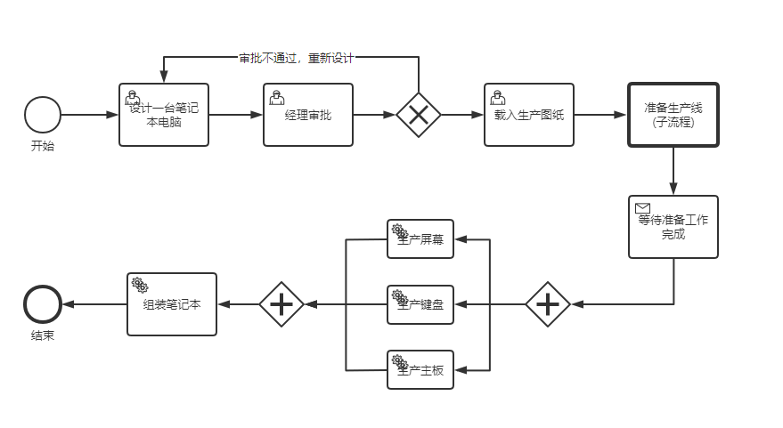
这个流程中不仅有串行任务还有并行任务,虽然技术上来说也能实现，但是如果用status字段去描述，实现起来会非常非常复杂。
三大工作流
Activiti:
侧重于云，即更靠拢spring cloud、docker、k8s等。
Camunada:
在这三个驻留的流程引擎这中，它是最轻量级的，如果我们的系统，当用户使用的过程中，需要动态的绘制流程图，那么可以使用它。这是一个小巧的工具，可以非常方便的嵌入到我们自己的系统中。它还提供了一个bpmn.js的工具，可以非常方便的实现流程图的绘制。
Flowable:
它目前的核心思路还是做一个功能非法从完善的流程引擎工具。除了常用的最最基本的工作流之外，Flowable还提供了很多扩展点。
流程图
工作流执行的基础是流程图
一个完整的流程，要干嘛，先得画出来一个完整的流程图
上卖弄介绍了三种不同的工作流，那么三种不同的流程图绘制的方式是否一样？
其实，流程图的绘制，有一套统一的标准：BPMN（Business Process Model And Notation）,中文译为业务流程模型和标记法。
BPMN 就是一套图形化表示发，用图形来绘制、梳理业务流程模型。就是说，BPMN其实是一个非常古老的流程图规范，Activiti、Camunada、Flowable都是支持这个规范的，所以，无论使用哪一个流程图，都可以依照BPMN去绘制流程图。
虽然BPMN大家都支持，但是，在具体的使用细节上，不同的流程引擎还是有差别的。
BPMN流程图怎么画
从上图中，大致上可以归类出，流程分为：
- 事件
- 连线
- 任务
- 网关
事件
开始事件、结束时间等等。
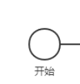
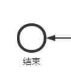
这是我们上面用到的时间，实际上，还有很多其他类型的事件。
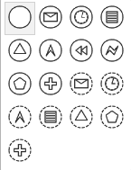
、连线
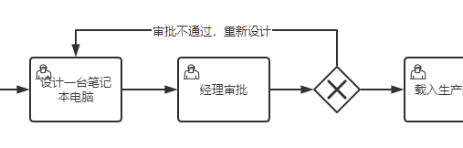
连接各个不同元素之间的线条，就是连线。
注意：线条之上，可能会有条件。例如，在互斥网关上，满足一定条件，流程图就继续往下走；不满足条件，流程图就回到之前的某一个位置。
任务
在上面的流程图，所有的矩形，都是任务，但是任务还有许多细分。
用户任务
需要人工参与才能完成的工作建模。
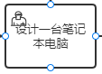
服务任务
机器自动完成的事情，例如用户请假，经理审批通过后，想通过企业微信给用户发送一个通知，告诉他请假通过。这样的任务，就可以使用服务任务。
就是当流程走到这一步的时候，自动调用一个javabean，或者某一个远程服务去完成通知的发送，这是自动完成的，不需要人工介入。
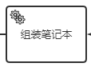
活动
活动可以算是一个特殊的任务。活动之中，往往可以在活动中，调用另外一个流程使只作为当前流程的子流程去执行。活动一般又可以继续细分为用户活动、脚本活动等等。。。
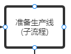
接受任务
这个接受任务中，其实不需要做什么额外的事情，流程到这一步就自动停下来了，需要人工去助理一把，去推动流程继续向下走
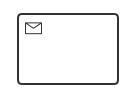
发送任务
将消息发送给外部的参与者。
脚本任务
一个自动化的活动，当流程执行到脚本任务的时候， 自动执行相应的脚本。
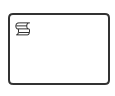
业务规则任务
BPMN2.0中引入的用来对接业务规则的引擎，业务规则主要用于同步执行一个或者多个规则。
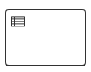
虽然这里分类比较多，但实际上，任务主要分两种：
- 用户任务：需要用户介入的任务。
- 服务任务：机器自动完成的任务。发送、接受、脚本等等任务，都是服务任务的细分。
网关
互斥网关
可以有多个入口，但只有一个有效出口。
并行网关
并行网关一般是成对出现的，当有并行操作的时候，可以使用并行网关。
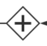
相容网关
这种网关可能会存在多个有效的出口。
事件网关
通过中间事件驱动的网关。当等待的事件触发之后，才会触发决策。
流程图绘制
IDEA 中有一个流程绘制插件 flowable-bpmn-visualizer
其他的绘制工具：
- flowable-ui 这是官方提供的一个 flowable 的工具，里边有很多功能，包括画流程图。
- bpmn.js 这个工具是 Camunda 提供的，可以嵌入到我们当前的项目中，利用这个 bpmn.js 可以开发一个流程绘制工具。原生的 bpmn.js 画出来的流程图只能在 Camunda 中使用，但是经过改造之后，就可以在 flowable 中使用了。
flowable-bpmn-visualizer
插件安装：
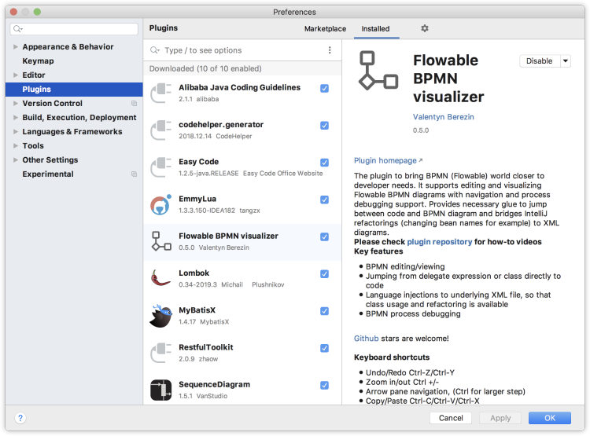
装好之后重启 IDEA 即可。
在 IDEA 中，当我们安装了这个插件之后，新建文件文件的时候，就有相应的选项：
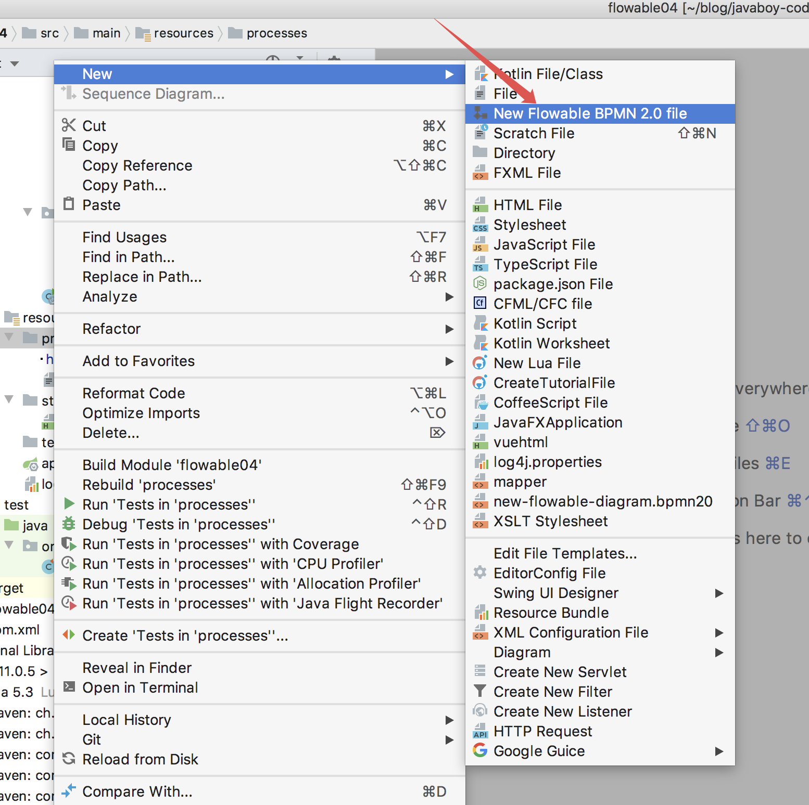
选择这个就可以新建一个流程图了。
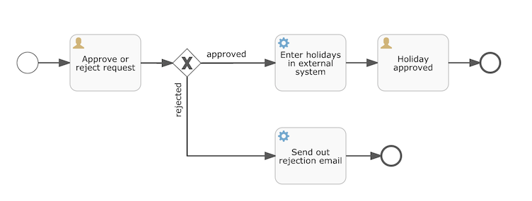
绘制关键节点：
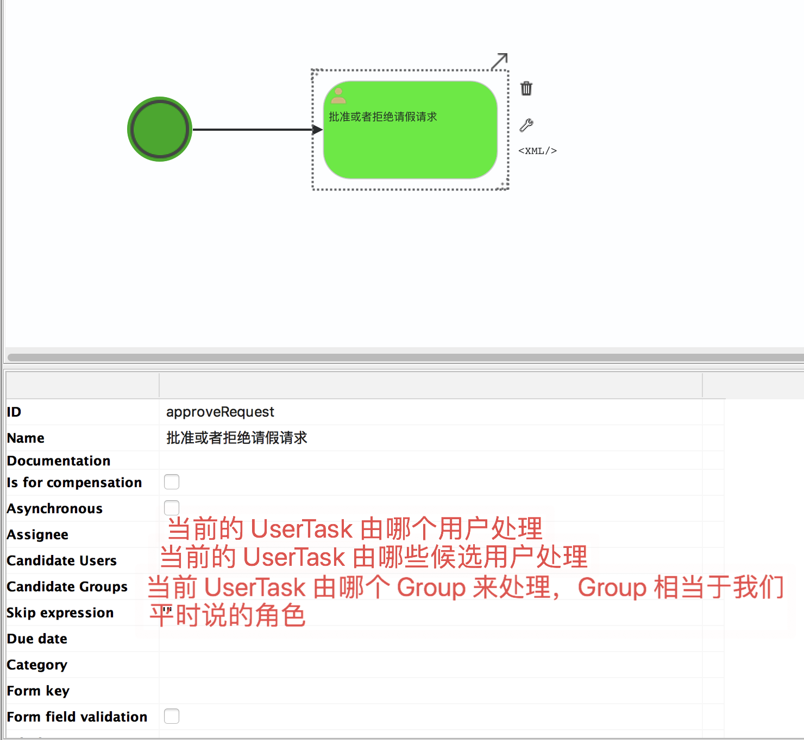
注意，这里如果是传递变量需要用 ${} 表达式
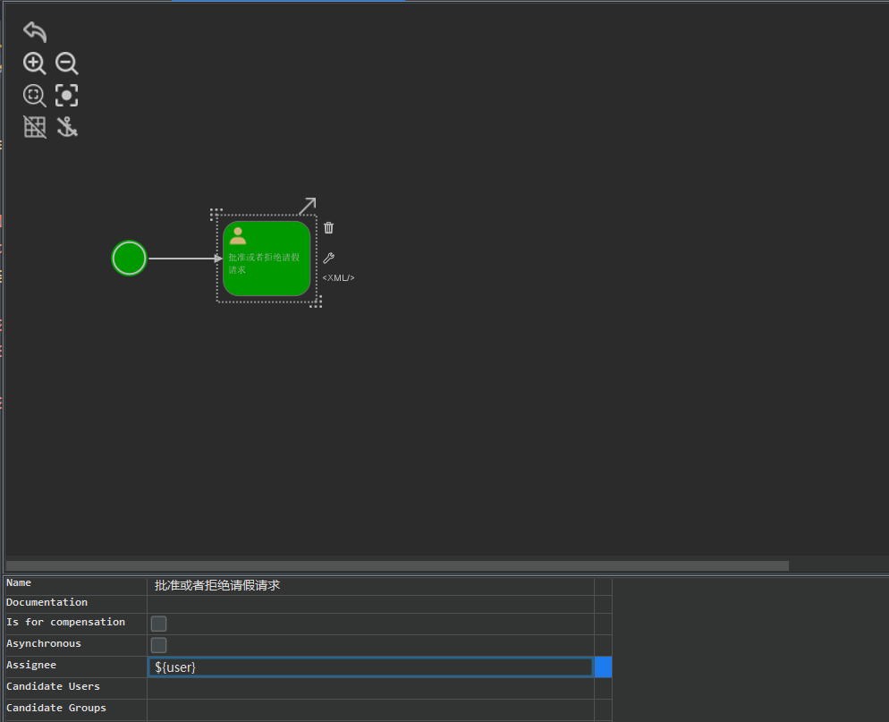
如果是字符串，直接写即可，例如，这个节点由一个名为 javaboy 的用户来处理，那么写法如下：
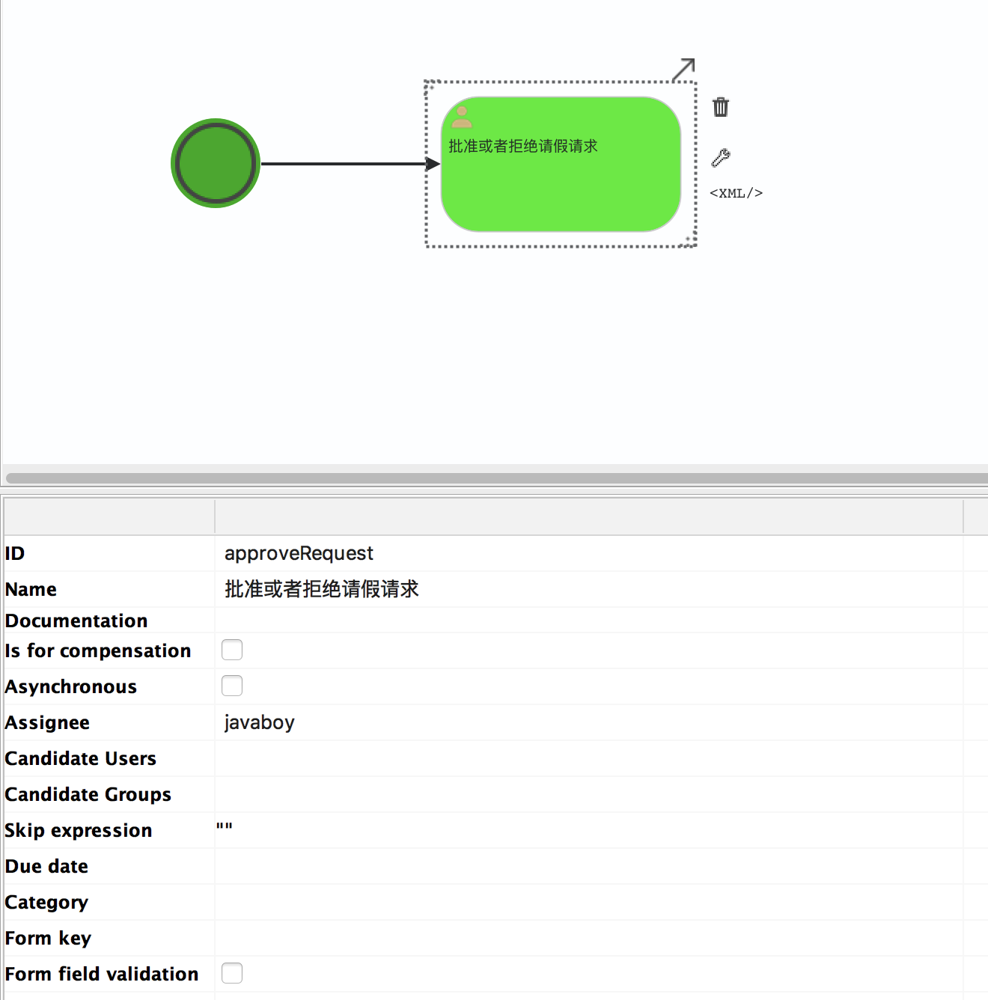
注意，从排他性网关出来的线条中，有一个 Condition expression，这个表示这个线条执行的条件。以下图为例，具体来说，就是当用户在审批的时候，本质上其实就是传递一个变量，变量值为 true 或者 false。下图中的 ${approve}表示这个变量的名字为 approve。
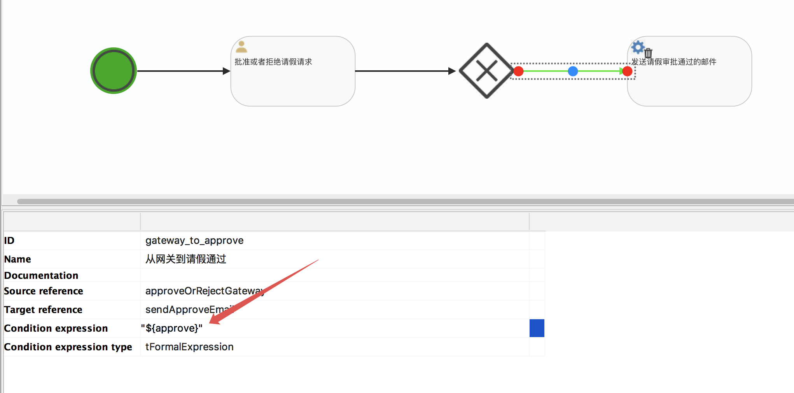
然后再来看发邮件的服务：
齿轮表示这是一个服务任务，也就是系统自动完成的，系统自动完成的方式有很多种，其中一种是提前将自己的业务逻辑在 Java 类中写好，然后这里配置一下类的完整路径即可。
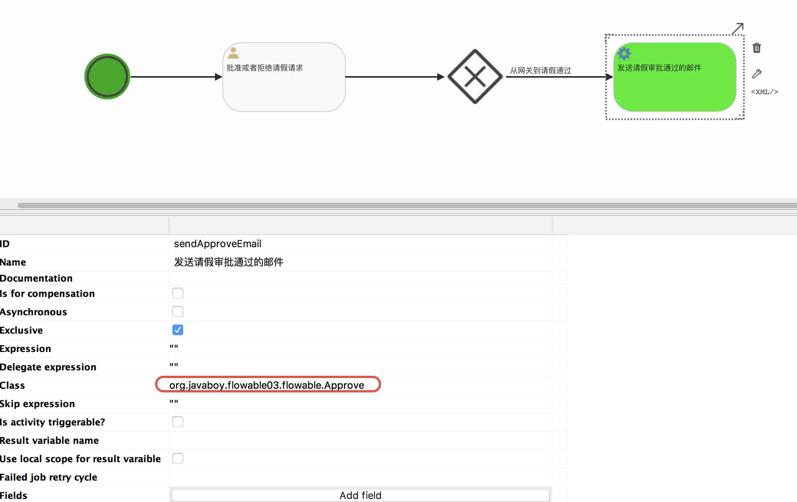
下图表示的是从网关出来之后，approve 变量如果为 false，那么就进入到请求被拒绝的服务中。
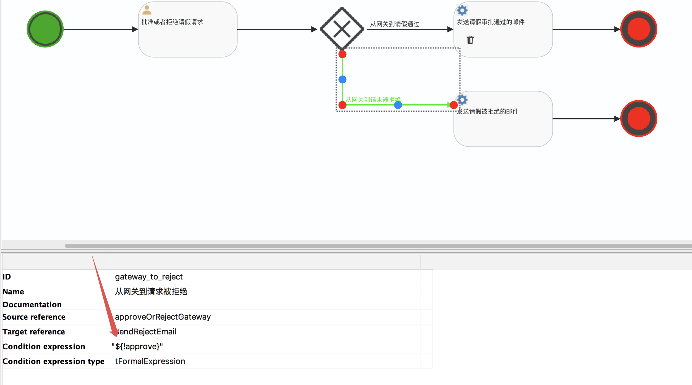
flowable-ui
这个是 Flowable 官方推荐的一个流程引擎辅助工具。
安装
有两种方式：
官方提供的是一个 war 包，这个虽然是一个 war 包，但是除了将之扔到 Tomcat 中去运行之外，也可以直接执行 java -jar xxx.war 这个命令去启动这个 war 包。
war 下载地址：https://github.com/flowable/flowable-engine/releases/download/flowable-6.7.2/flowable-6.7.2.zip. 这个 zip 包下载之后，里边有一个 wars 文件夹，里边包含了 flowable-ui 的 war 包。然后，就像启动 Spring Boot 一样，直接启动这个 war 包即可：
文件位置：
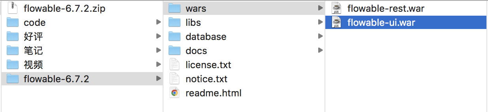
启动命令：
java -jar flowable-ui.war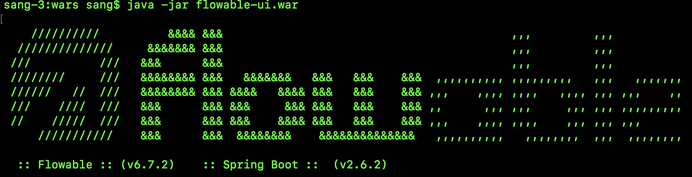
启动之后，默认的端口号是 8080。
启动之后，浏览器输入 http://localhost:8080/flowable-ui/idm/#/login. 如果看到如下页面，表示启动成功：
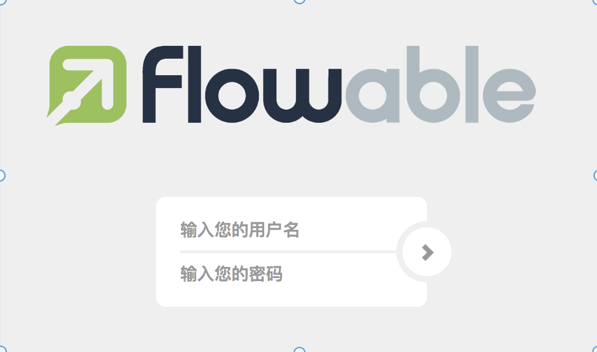
另外，我们也可以使用 docker 来安装，命令如下：
docker run -p 8086:8080 -d flowable/flowable-ui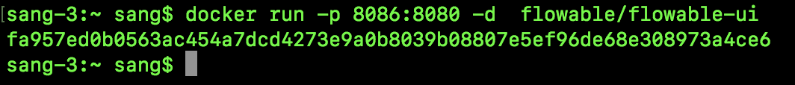
最后访问http://localhost:8086/flowable-ui
登录
默认的登录用户名是 admin，默认的登录密码是 test。
看到如下页面，表示登录成功。
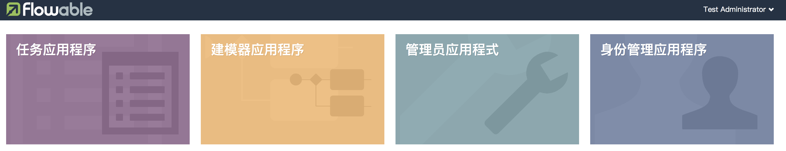
功能模块
flowable-ui 是完整的 flowable 体验 DEMO，而不仅仅只是一个流程图的绘制工具。所以它里边不仅可以画流程图，还可以运行流程图，既然能够运行流程图，那么就需要身份管理。
- 任务应用程序：我们绘制好的流程图，可以直接将之发布到一个应用中，然后在这里进行部署，这个模块其实就是这些部署的应用程序。
- 建模器应用程序：这个专门用来画流程图的。
- 管理员应用程序：这个主要用来管理应用，一些具有管理员权限的用户，可以通过这个功能模块去查询 BPMN、DMN、FORM 等等信息。
- 身份管理应用程序：这个功能模块，为所有的 flowable-ui 应用程序提供一个单点登录功能，并且还可以为这些用户设置用户组、用户权限等。
身份管理应用程序
创建用户流程：
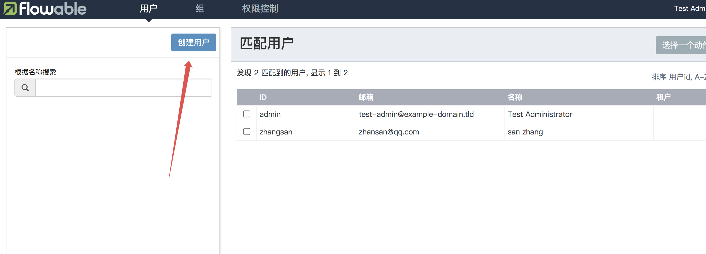
填入用户的基本信息，点击保存按钮，就可以完成用户的创建了。
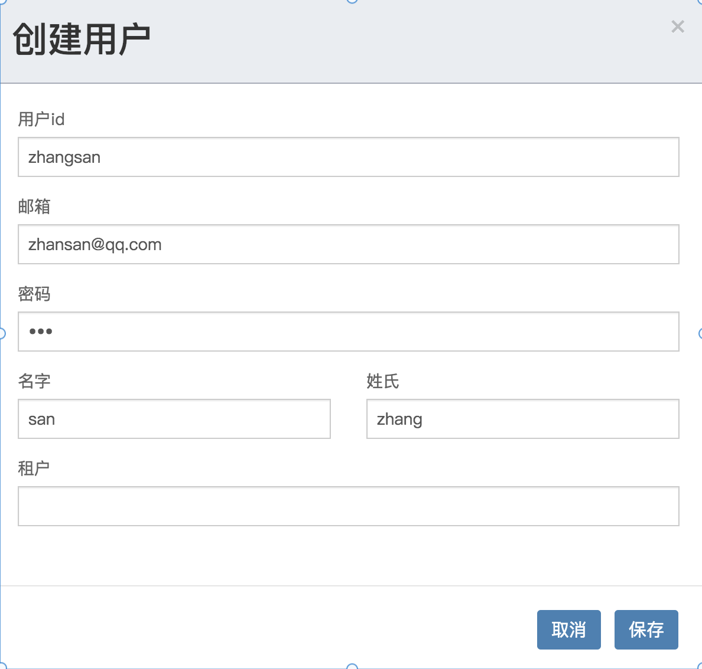
新建的用户不属于任何用户组，所以这个新建的用户是没有权限的，我们现在就可以使用这个新建的用户登录，但是登录成功后，看不到任何功能模块。
用户创建成功之后，可以点击上面的用户组功能，创建用户组：
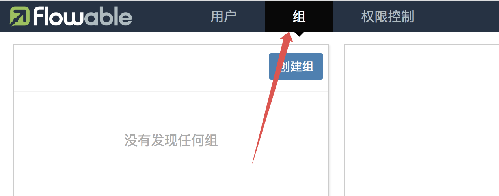
将来我们在画流程图的时候，可以设置某一个 UserTask 由某一个用户组来处理，这个用户组中的所有用户，将来都可以处理这个 UserTask。
组创建成功之后，可以为这个组添加用户：
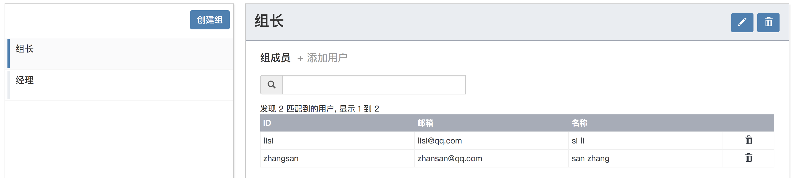
最后，我们可以在权限控制中，为用户或者用户组添加相应的权限。
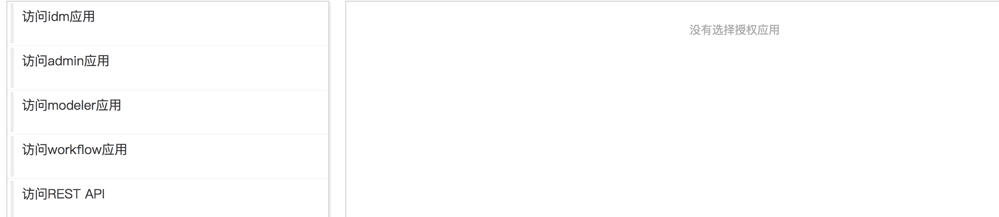
- 访问 idm 应用：访问功能4.
- 访问 admin 应用：访问功能3。
- 访问 modeler 应用：访问功能2.
- 访问 workflow 应用：访问功能1.
- 访问 REST API：访问 REST API 接口的。
管理员应用程序
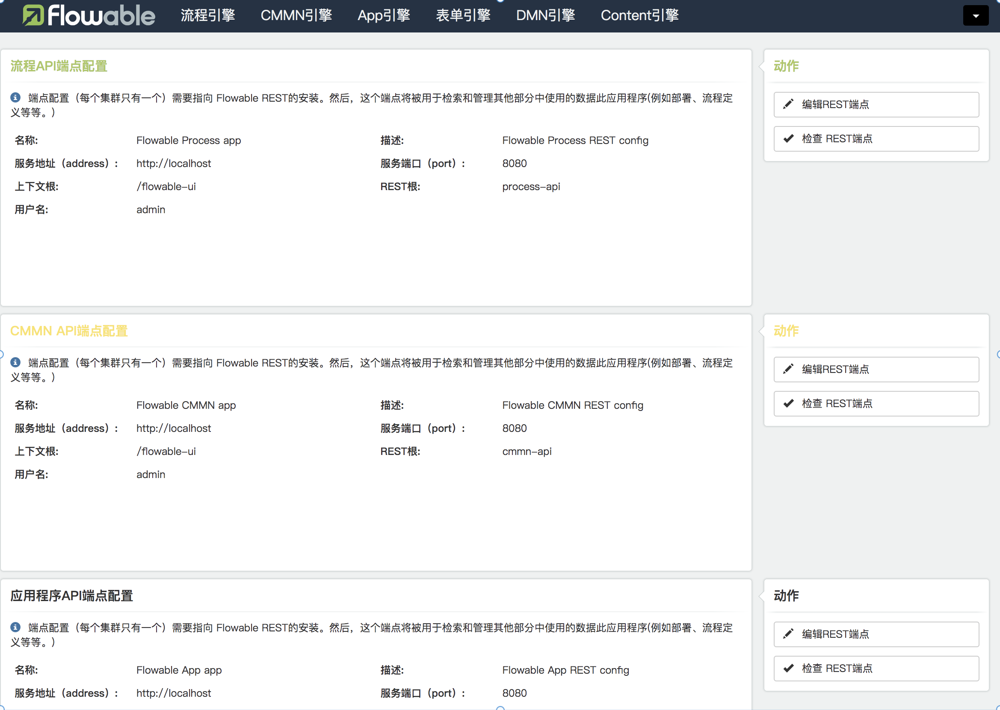
建模器应用程序
核心功能，主要就是画流程图。
绘制一个报销流程图，大致流程：
启动一个流程。
执行一个用户任务，这个用户任务交给流程的启动人去执行。这个用户任务中，填入报销材料，例如用户名、金额、用途。
系统自动判断一下/或者人工判断报销金额是否大于 1000。
如果报销金额小于等于 1000，那么这个报销任务交给 组长审批：
- 组长审批通过，则流程结束。
- 组长审批不通过，则流程回到第 2 步，用户重新去填写报销资料。
如果报销金额大于 1000，那么这个报销任务先交给经理审批：
- 经理审批通过，则交给 CEO 审批：
- CEO 审批通过，流程结束。
- CEO 审批不通过，流程回到步骤 2 中。
- 经理审批不通过，则流程回到步骤 2 中。
绘制流程
首先创建一个流程：
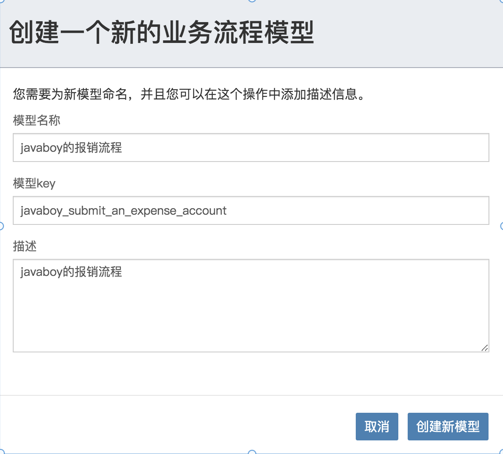
注意，模型的 key 在当前应用中必须是唯一的，将来我们通过 Java 代码去操作这个模型的时候，就是通过模型 key 去识别这个模型。
绘制出来的流程图：
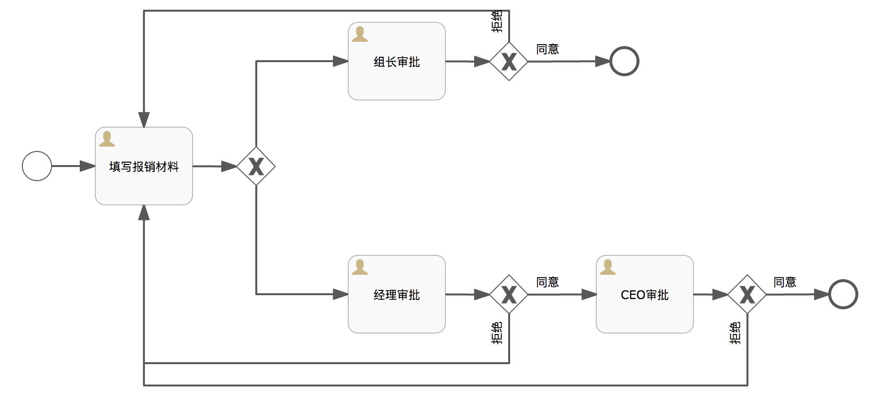
注意，在一个流程图中，开始节点必须有且只有一个，结束节点可以有多个。
表单问题
在流程中，传递流程参数有两种方式：
- 流程变量。
- 表单。
这两种方式都可以传递参数，区别在于，流程变量是零散的，而表单是整的。
对于通过表单传递的参数，我们也可以按照流程变量的方式去访问单个的表单参数，例如在上面的流程图中，我们有 ${money <= 1000}，这里的 money 实际上是表单中的参数，但是我们可以直接通过 $ 表达式去访问。还有如 ${managers_approve_or_reject_radio_button=="拒绝"}，也是直接访问表单中的变量。
任务处理人
对于一个 UserTask 而言，任务处理人有四种：
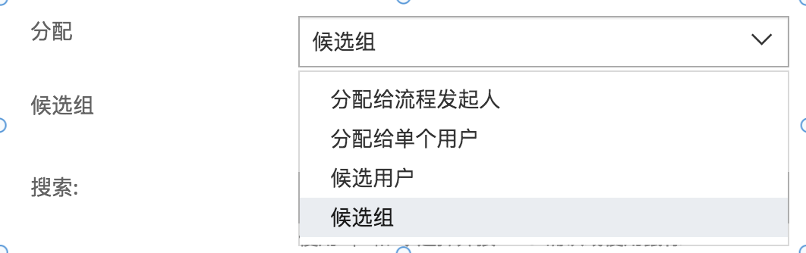
- 流程发起人，由流程的启动人/发起人来处理这个流程。
- 单个用户，直接指定某一个具体的用户来处理这个流程，注意这里只能指定一个用户，并且这个用户将来在处理任务的时候，不需要认领，直接就可以处理。
- 候选用户：可以同时指定多个用户来处理这个 UserTask，将来用户在处理的时候，需要先认领（Claim）任务，然后才能处理。
- 候选组：可以同时指定多个用户组来处理这个 UserTask，这个处理的时候，也需要先认领，再处理。
基本概念
- 流程定义（ProcessDefinition）：我们绘制的流程图、流程的 XML 文件，就是我们的流程定义。
- 流程（ProcessInstance）：一个启动了流程实例就是一个流程，流程可以是已经执行完毕的，也可以是正在执行中的。流程的定义相当于是一个类，而流程则相当于是一个对象。
- 任务（Task）：一个 ProcessInstance 中，需要具体处理的节点就是一个任务。